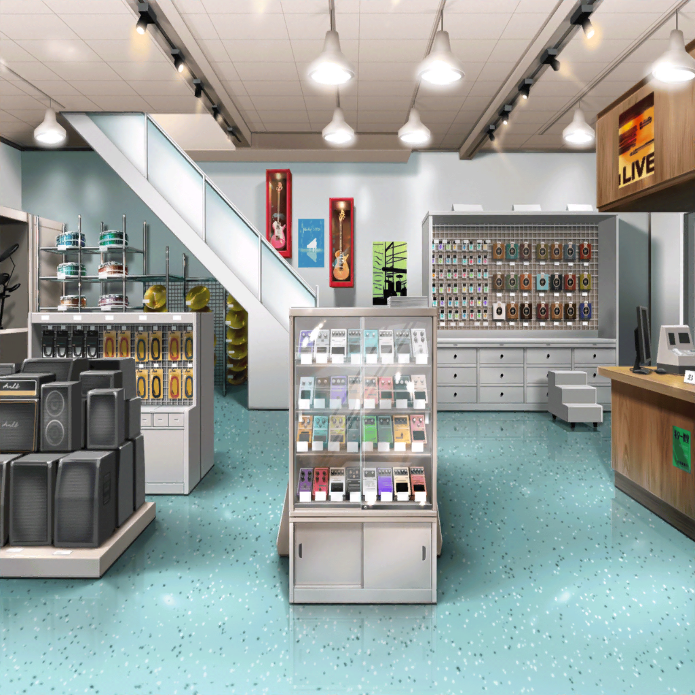
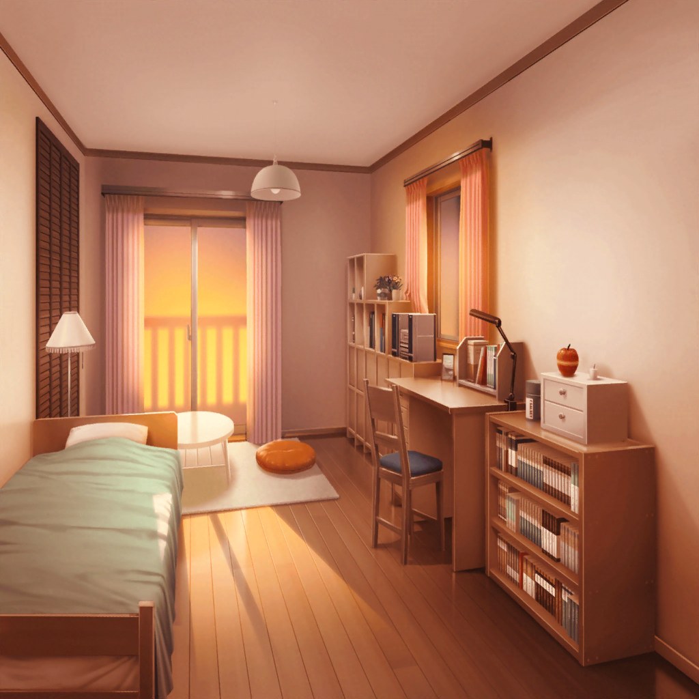
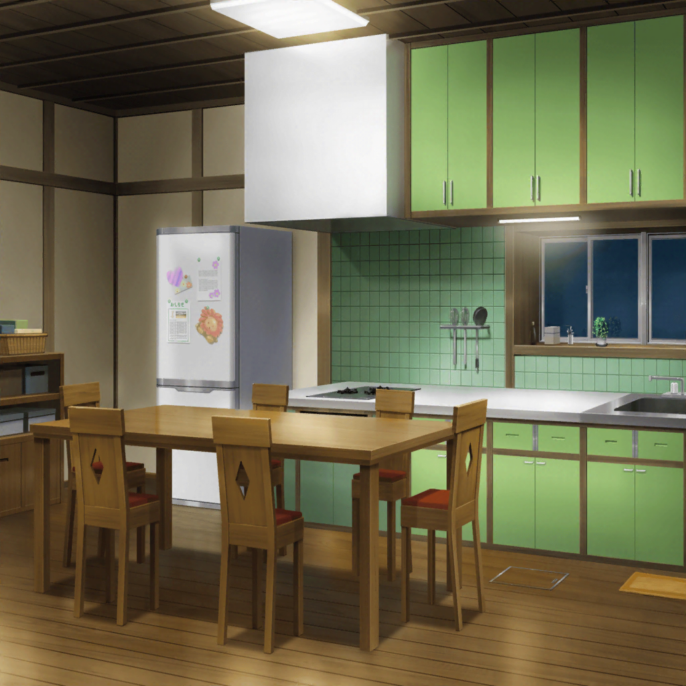

江戸川楽器店
たえ
いっちばーん！
香澄
２番だー
りみ・有咲
はあ、はあ……
有咲
つーか、いきなり走んなよ！
香澄
早く楽器屋さんに行きたくてー。
でも、いい運動になったでしょ？
たえ
うん、有咲のためだよ
有咲
どういう意味だ、テメー……！
りみ
香澄ちゃん、何を見に来たの？
香澄
ギターの弦！
おたえに材質で音が変わるって教えてもらったから、
自分の好きな音、探してみようかなって！
夏希
……市ヶ谷さん？
有咲
え……！？
香澄
有咲のクラスメイト？
夏希
ちょっと意外。
市ヶ谷さん、バンドやるんだ？
有咲
成り行きで……
夏希
みんな、A組の人だよね？
私、B組の海野夏希。私もバンドやってるんだ
香澄
そうなんだ！
じゃあ、後ろにいるその子もメンバー？
ひなこ
…………
夏希
メンバーじゃなくて、先輩だよ
りみ
あ、ひなちゃん
香澄
りみりんも知ってるの？
でも先輩、どこかで見たことあるような……？
有咲
えっ、香澄も？
私もどっかで見たことある気が……
たえ
グリグリのドラムのひなこさんだよ
香澄・有咲
あーっ！？
香澄
そうだ！ おつかれさまですっ、先輩っ！
ひなこ
ふふ……
集え少女よ！ 大志を抱け！
フゥーーーーッ！！！！
香澄
え？ え？ フーッ！ 抱け！
ひなこ
声が小さいー！
香澄
抱けーーっ！！！
ひなこ
お店に迷惑だーっ！！！
香澄
ええーーっ！！？
有咲
やべぇ。りみ、やべぇよ、この人
りみ
いい人だよ
夏希
バンドの相談とか乗ってくれるし
ひなこ
えーと、きらきら星の香澄ちゃん！
花園ミステリアスたえちゃん！
ひなこ
蔵弁慶の有咲ちゃん！
そして、マイシスターりみちゃん！
りみ
違うよ〜
有咲
な、なんで知ってるんですか？
話したの初めてですよね……？
ひなこ
この間、蔵でライブしたってゆりりんに聞いたからー！
かわいい少女達は全部ひなちゃんワールドにご招待！
有咲
こ、こええ……！
たえ
ライブ中は喋らないから、静かな人だと思ってた
りみ
止められてるんだよね？
ひなこ
んー！
なんかねー、イメージ壊れるから黙っとけって！
ひなこ
なんでだろうねー？ なんでかなー？
あっ、有咲ちゃん、ツインテかわいいー！
有咲
ぎゃー！ 助けて、りみー！
香澄
……あっ！ そうだ、先輩！
先輩にやってもらおうよ、ドラム！
香澄
先輩！ 文化祭でドラムやってください！
有咲
おまっ、いきなり……
ひなこ
ハイッ！ 喜んでー！！
有咲
即決！？
ひなこ
んー、でも〜
君達の近くにはひなこちゃんよりバッチリな子いるぜ？
ね、なっちゃん！
夏希
……沙綾のことですか？
香澄
え？ なんでさーや？
夏希
……中学の時に沙綾とバンド組んでたんだ。
私がギターボーカルで、沙綾がドラム
香澄
さーやがドラム？？
夏希
やっぱり戸山さん達には話してなかったんだね
りみ
う、うん、聞いたことないよね。
沙綾ちゃん、バンドやってたんだ……
たえ
中学の頃から……すごいね
夏希
結局、一緒にライブはできなかったけどね
香澄
どうして？
夏希
理由はいろいろあると思うけど……
沙綾、言ってくれないから
夏希
ひとりで悩んで、全部ひとりで決めちゃって……
何も言ってくれなくて……
夏希
だから戸山さん達のチラシ見て、嬉しかったんだ。
また沙綾がバンドやる気になったのかなって……
香澄
なっちゃん……

山吹家 沙綾の部屋
香澄
ごめんね、さーや。
急に押しかけたりして
沙綾
ううん、別にいいよ。
でも、家まで来るなんてどうしたの？
香澄
うん、あのね……
さーやがバンドやってたこと聞いちゃった
沙綾
そっか、ナツと話したんだ
香澄
なっちゃん、心配してたよ？
さーや、何も言ってくれないって。
今のままじゃやだなって……
香澄
ね、文化祭、やっぱり一緒に出ようよ！
この前、一緒にライブやろうって言ったよね！
私、さーやがドラム叩いてるところ見たい！
沙綾
無理だよ。練習してないし迷惑かけるだけ
香澄
いいよ！ 私だってさーやにいつも迷惑かけてるし！
沙綾
やだよ、もうバンドやるつもりないから
香澄
なんで？
沙綾
……帰り遅くなるの嫌なんだ。
私がいないと母さん、無理しちゃうから
沙綾
昔から身体弱いんだ。
なのに家のこと全部ひとりでやろうとして……
私、母さんが倒れるまで気づかなかった
香澄
だから、バンドやめちゃったの？
香澄
それなら、お店が忙しい時は私も手伝う！
みんなで協力すれば、さーやがバンドする時間だって……
沙綾
……ごめん。他の人探して
香澄
なんでダメなの？
香澄
バンドしてる時のさーや、すっごく楽しそうだったって、
なっちゃん言ってたのに……バンド、嫌いになっちゃったの？
沙綾
！ そんなわけないじゃん！
沙綾
香澄にはわかんないよ！
私、みんなに迷惑かけてまでバンドできない！
沙綾
ナツ達も香澄と同じこと言ってくれたんだよ！
私が大変なら、力になるって！ 手伝うって！
私のこと心配して、練習時間減らそうって！
沙綾
みんな、自分のことより、私のことばっか！
それで楽しいの？ 私だけ楽しんでいいの？
いいわけないじゃん！
沙綾
私の代わりに誰かが損して……だからやめたのに……
今更できるわけないじゃん……
香澄
できるよ……
沙綾
できない！
香澄
できる！
なんでもひとりで決めちゃうのずるい！
一緒に考えさせてよ……
沙綾
…………

山吹家 リビング
香澄・沙綾
…………
有咲
おつかれ
香澄
えっ、なんでみんないるの？
たえ
お店で話聞いて、どこか行っちゃったから、ここかなって
有咲
つーか、下まで声聞こえてたぞ
りみ
純くん、びっくりしてお店に逃げちゃった……
有咲
……じゃあ、そろそろ帰るか
香澄
えっ、で、でも……
有咲
こんな状態で話なんてできないでしょ
有咲
まあ、私はどうでもいいけど……
新しいメンバーが入るなら、知らない人より
山吹さんのほうが私は楽かな
りみ
私も！ 沙綾ちゃんとできたら、すっごく嬉しい
たえ
……携帯に曲のデータ送った。聞いてみて
沙綾
だから、無理だってば……
香澄
待ってる。待ってるから
沙綾
……………